Apple Watch 网球记分 — 支持搭配或不搭配 iPhone 使用
用手表记分 · 在 iPhone 深入查看
记录每一分，读懂每场比赛。
选择“Standalone”以获得完整的 Apple Watch 体验，或选择“Companion”将 Apple Watch 的实时记分与 iPhone 上的比赛历史和统计数据相结合。
查看不同版本
↓
自动比赛统计
发球与接发球分析
破发点
Apple Health 训练
实时心率
本地比赛历史
选择适合您的 Tennis Score Wizard
两个版本均包含完整的 Apple Watch 体验。选择“Standalone”仅限 Apple Watch 使用，或选择“Companion”以获得与 iPhone 连接的完整手表应用。
Standalone
仅限 Apple Watch
直接安装在 Apple Watch 上，从手腕上管理整场比赛。无需 iPhone 配套应用。
- 在 Apple Watch 上设置比赛和实时记分
- 自动统计数据和本地比赛历史记录
- 可选的 Apple Health 锻炼记录功能
从 App Store
下载
1.4 版 · 现已上线
Companion
iPhone + Apple Watch
获取与 Standalone 完全相同的 Apple Watch 应用，连接 iPhone 后可同步比赛历史、结果、训练数据和详细统计信息。
- 在 Apple Watch 上进行完整的比赛设置和实时计分
- Apple Watch 上的比赛历史、统计数据、训练记录和表盘功能
- iPhone 上的同步比赛回顾
从 App Store
下载
1.1 版 · 现已发布
比较功能 ↓
Companion 体验
完整体验，双屏呈现。
Companion 包含 Standalone 在 Apple Watch 上的全部功能。iPhone 则提供更宽敞的同步视图，用于查看比赛历史、结果、统计数据和训练数据。
赛场 · Apple Watch
完整的比赛体验尽在您的腕间。
设置比赛、记录每分得分、追踪发球位置、使用“撤销”功能、记录训练数据、查看历史和统计数据，以及通过复杂功能启动应用——与 Standalone 完全一致。
同步
球场之外 · iPhone
需要时，随时可切换至更大视图。
已保存的比赛数据会同步到 iPhone，在那里您可以更方便地详细查看比赛结果、历史记录、详细表现和训练分析。
01
功能齐全的 Apple Watch 应用
Standalone 应用中的所有功能在 Apple Watch 上均可使用。
02
同步的比赛历史记录
您保存的比赛数据可在 Apple Watch 和 iPhone 之间同步。
03
大屏幕分析
在 iPhone 上查看比分，以及发球、接发球、破发点、比赛走势和抢七统计。
04
训练详情
在任意一台设备上查看训练时长、心率和活动能量。
Companion 的 iPhone 端
随需而得的更大视图
比赛在 Apple Watch 上设置并记录比分。iPhone 则提供简洁宽敞的界面，显示同步的比赛结果、历史记录、详细表现及锻炼洞察。
最新及近期比赛
打开 Companion 应用，即可查看从 Apple Watch 同步过来的最新结果和近期比赛。
完整比赛历史记录
浏览已完成和已中止的比赛，查看比赛类型、时长、结果及总局数。
得分和关键数据
查看各盘比分、总计分数、赢得分数、胜率以及抢七结果。
发球、接发球与破发点
分析发球与接发球表现、比赛走势与节奏，以及破发点情况。
训练洞察
在 iPhone 上查看训练时长、平均心率、最高心率和活动能量。
Companion 1.1 新功能
从单场复盘，到长期表现一目了然
日历让每场比赛各归其位，统计汇总你的表现，趋势则帮助你了解球技如何随时间变化。
月历
胜利、失利和中止比赛都会显示在比赛当天；同一天的多场比赛也会集中呈现。
年度总览
按月查看比赛数量和赛果分布，快速回顾整个赛季。
表现总览
选择时间范围以及全部、单打或双打，查看战绩、上场时间、盘数和近期赛果。
状态与比赛特征
了解连胜、决胜盘战绩、盘和局的胜率、先赢首盘后的取胜率以及逆转获胜次数。
胜率趋势
通过最多五场有效比赛的滚动区间，观察近期成绩的走向。
发球与接发趋势
可在胜率、得分率、发球局胜率和接发局胜率之间切换图表。
随时分享
分享的不只是比分
既可以发送简洁的文字摘要，也可以根据当前选择的比赛、时间范围、比赛类型和统计页面生成精美图片卡片。
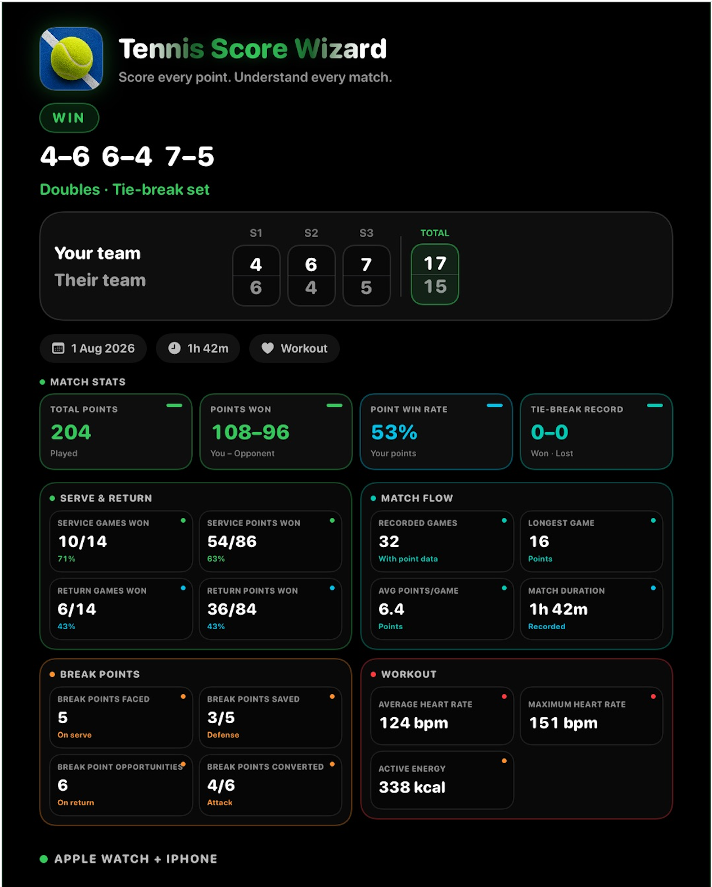
比赛结果
一张卡片呈现比分，以及发球、接发、破发点、比赛走势和体能训练数据。
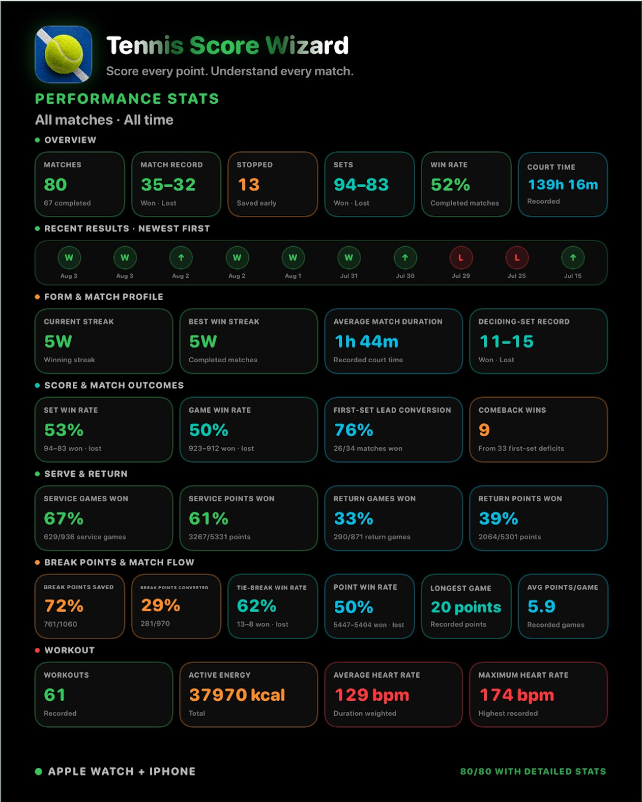
表现总览
按当前选择的时间范围，以及全部、单打或双打筛选条件导出。
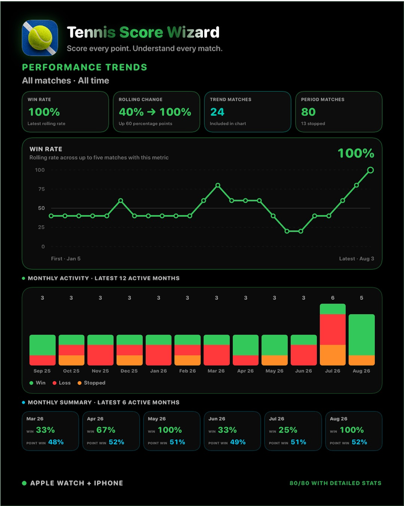
表现趋势
将所选趋势连同月度比赛活跃度和近期月度摘要一起分享。
Apple Watch 版 Standalone
您所需的一切，尽在腕间。
设置比赛、记录每分得分、追踪发球方和发球位置、可选记录训练数据，以及查看历史记录和统计数据——所有操作均可在 Apple Watch 上完成，无需 iPhone。
Standalone 功能
在 Apple Watch 上享受完整的比赛体验
设置比赛、记录每分得分、可选地记录训练数据，并查看历史记录和自动生成的统计数据，无需依赖 iPhone。
标准网球计分
使用大号可点击计分卡，自动记录 0–15–30–40、平分、占先、局、盘和抢七。
自动比赛统计
比赛结束后，History 可以显示分数、发球、接发球、破发点、抢七和比赛走势统计，这些都来自日常记分操作。
训练记录
可选择将网球比赛记录为 Apple Health 训练，并查看平均心率、最高心率和活动能量。
比赛控制
使用抛硬币选择先发球方、发球侧提示、Switch Server、Undo、自动结束比赛和本地比赛历史。
Standalone 图库
Apple Watch 上的 Standalone
体验完整的 Standalone 流程：比赛设置、训练记录、实时记分、抢七局、已结束的比赛、历史记录和自动统计数据——全部在 Apple Watch 上完成。

比赛设置
比赛开始前选择单打或双打、Best of 3 或 Best of 5，以及盘规则。

发球方与训练
选择先发球方，使用抛硬币，开启 Record Workout，并从同一屏幕开始比赛。

实时计分
通过大号卡片计分，同时查看发球方、发球侧、盘数、训练状态和实时心率。

抢七
在 6–6 时，用同样醒目、易操作的记分按钮记录抢七分数。

比赛结束
当比赛决出胜负后，App 会显示获胜方、盘分结果，并可快速进入 History 或 Done。
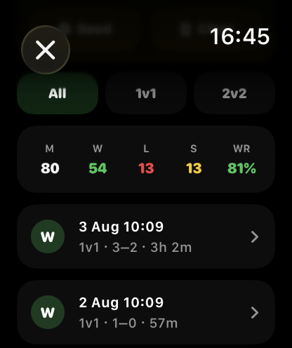
历史概览
直接在 Apple Watch 上查看胜场、负场、中止比赛、胜率和已保存比赛。
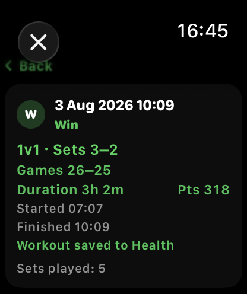
比赛摘要
打开已保存比赛，查看比分、局数、时长、总分、训练状态和比赛中止时的状态。
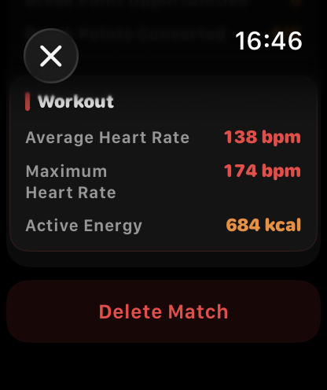
训练统计
已记录的训练可在比赛保存后显示平均心率、最高心率和活动能量。
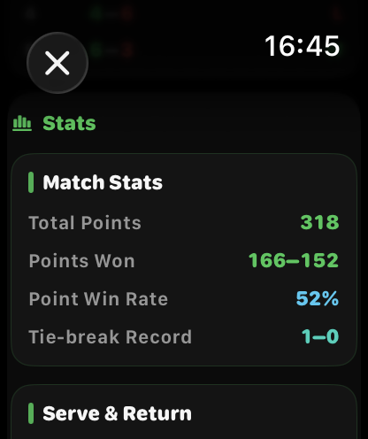
比赛统计
查看总得分、赢得分数、得分率和抢七战绩。
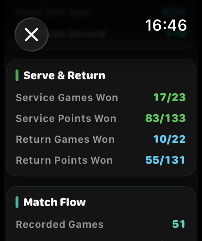
发球与接发
查看发球局胜场、发球得分、接发局胜场和接发得分。
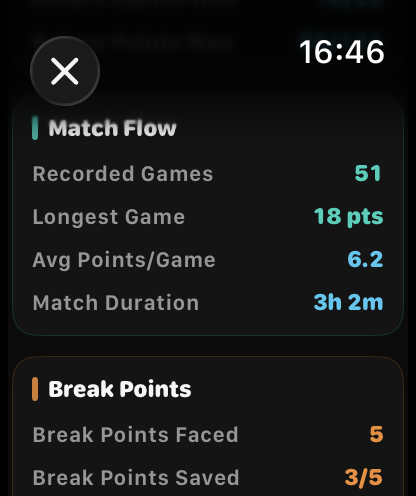
比赛走势
查看已记录局数、最长一局、平均每局分数和比赛时长。
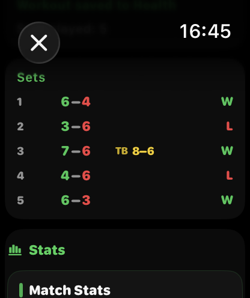
盘数与抢七
在正式赛果中查看每盘比分和已记录的抢七比分。
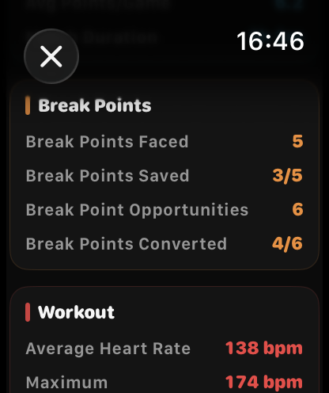
破发点
查看面对、挽救、获得和兑现的破发点。
从 Apple Watch 表盘快速启动
将 Tennis Score Wizard 添加到受支持的 Apple Watch 表盘，轻点一下即可打开应用。

角落图标
将 Tennis Score Wizard 放在表盘角落，比赛前一键启动。

圆形图标
将 Tennis Score Wizard 放在圆形区域，一点即可开始记分。
版本对比
Apple Watch 上的使用体验完全一致。区别在于配套内容。
Standalone 提供完整的 Apple Watch 体验。Companion 包含同样完整的 Apple Watch 应用，并额外提供与 iPhone 同步的界面。
完整的 Apple Watch 应用
✓ 包含
✓ 包含
比赛设置、实时比分、撤销操作和发球指导
在 Apple Watch 上
在 Apple Watch 上
比赛历史和详细统计数据
在 Apple Watch 上
在 Apple Watch 和 iPhone 上
锻炼和心率详情
在 Apple Watch 上
在 Apple Watch 和 iPhone 上
Apple Watch 复杂功能
✓ 包含
✓ 包含
按月和按年查看比赛日历
不包含
在 iPhone 上
可分享的文字摘要和图片卡
不包含
在 iPhone 上
最适合
希望所有功能尽在腕间的球员
希望同时拥有完整 Apple Watch 应用和更大赛后视图的球员
两个版本功能共享
两个版本采用相同的网球记分逻辑。
Standalone和 Companion 版均包含自动统计、比赛历史、训练记录、计分规则和帮助功能。Companion 版增加了与 iPhone 同步的界面；它不会改变比赛的计分方式。
比赛统计指南
两个版本均支持自动统计功能，该功能基于您日常的计分点击自动计算，因此您无需手动输入ACE球、制胜分、多拍数或任何其他比赛数据。
分数
显示总共进行了多少分，以及双方各赢了多少分。分数差距很小通常说明比赛比盘分看起来更接近。
发球
显示你在自己发球局中的表现。发球局是你发球的局；发球分是你发球时进行的单个分。
接发球
显示对手发球时你的表现。赢下接发球局就是破发。接发球得分显示你在对手发球时赢分的频率。
破发点
挽救破发点是你在自己发球时顶住的破发点。兑现破发点是你在对手发球时赢下的破发机会。
比赛走势
根据已记录分数显示比赛走势：最长一局、平均每局分数、已记录局数以及抢七战绩。
训练
如果开启 Record Workout 并授予 Health 权限，History 可以显示已保存网球训练的平均心率、最高心率和活动能量。
快速示例
下面是赛后常见统计行的读法。
分数 67–72
你赢了 67 分，对手赢了 72 分。差距很小通常表示比赛比盘分看起来更接近。
发球局 3/10
你在 10 局中发球，并赢下了其中 3 局。这表示你保发的频率。
接发球局 6/11
对手在 11 局中发球，你完成了 6 次破发。
挽救破发点 4/11
你在自己的发球局中面对 11 个破发点，并挽救了 4 个。
兑现破发点 6/13
你有 13 次破掉对手发球局的机会，并成功了 6 次。
平均每局分数 6.3
每局平均约 6 分。数值越高，通常代表局数更长、更胶着。
旧比赛
自动统计加入之前保存的比赛可能不包含统计数据。使用 1.2 或更高版本保存的新比赛可以包含新的 History 统计。
隐私
比赛历史会保存在你的设备本地。Health 访问是可选的，仅用于训练记录和与心率相关的训练详情。
快速帮助
如何开始比赛？
选择 Singles 或 Doubles，选择 Best of 3 或 Best of 5，选择盘规则，手动或通过抛硬币选择先发球方，可选择开启 Record Workout，然后开始计分。
如何记录训练？
在设置时开启 Record Workout。如果授予 Apple Health 权限，比赛可以作为网球训练记录并保存到 Apple Health。
实时心率如何工作？
当授予 Apple Health 权限且 Apple Watch 提供心率数据时，实时心率会在记录训练时显示。
Menu 有什么作用？
比赛进行中，Menu 可访问 Switch Server、停止未完成比赛、打开历史记录或开始新比赛等操作。
Undo 如何工作？
Undo 会撤销最后记录的一分，并恢复之前的比赛状态，包括分数、局数、盘数、发球方、发球位置、抢七状态和统计计数器。
发球标记如何工作？
当你发球时，网球图标会提示你应该从哪一侧发球。当对手发球时，它会从你的手表视角提示对手的发球侧。
理解比赛历史
两个版本均可在 Apple Watch 上显示已保存的比赛结果。Companion 版还将相同的比赛历史记录同步至 iPhone，以便在更大屏幕上查看。
Win 和 Loss 是什么意思？
Win 表示你按盘数赢下了已完成比赛。Loss 表示对手按盘数赢下了已完成比赛。
Stopped 是什么意思？
Stopped 表示比赛在正常结束前被保存。App 会保留真实比赛上下文，包括盘、局、时长、分数和已收集统计。
S1、S2、S3 是什么？
S1、S2、S3 表示第 1 盘、第 2 盘和第 3 盘。例如 S1 6–3 表示第一盘以 6 比 3 结束。
TB 7–3 是什么意思？
TB 表示 7–6 盘中的抢七分数。例如 7–6 · TB 7–3 表示该盘 7–6 获胜，抢七比分为 7–3。
中止比赛如何判断？
如果中止比赛有明确的盘数领先，History 会显示谁按盘数领先。如果盘数相同，App 会比较局数，然后比较可用的抢七分数。
未完成的一盘会怎样？
对于中止比赛，如果当前未完成的一盘已有进展，也会保存，以保留真实比赛上下文，例如 S3 0–1。
FAQ
App 会收集数据吗？
不会。比赛历史保存在你的设备本地。App 不需要账户，也不会把比赛历史发送到服务器。
必须启用 Apple Health 吗？
不需要。Health 访问是可选的。你可以不记录训练，只使用网球计分功能。
比赛统计需要额外点击吗？
不需要。统计由正常计分点击生成。App 不会要求你输入 ACE、制胜分、非受迫性失误或回合长度。
可以用于双打和抢七吗？
可以。App 支持单打、双打、Best of 3、Best of 5、长盘规则和抢七盘规则。
可以删除比赛历史吗？
可以。已保存比赛可在 History 屏幕删除。
隐私
Tennis Score Wizard 不收集个人数据。
比赛历史会保存在你的设备本地。App 不需要账户，不会传输、出售或共享个人数据。
Apple Health 访问是可选的，仅在获得授权后用于记录网球训练，并在记录比赛时显示实时心率。
阅读隐私政策